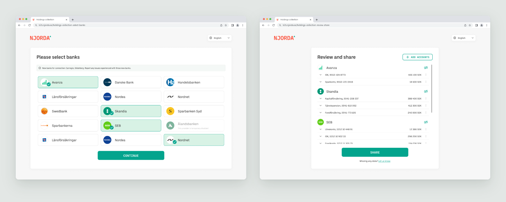
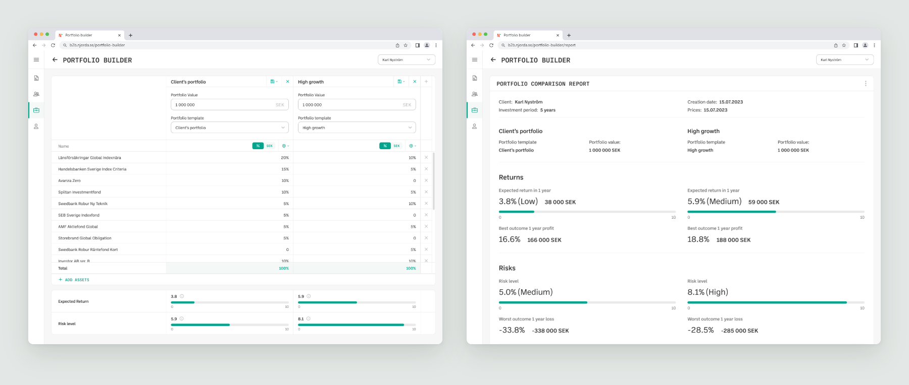
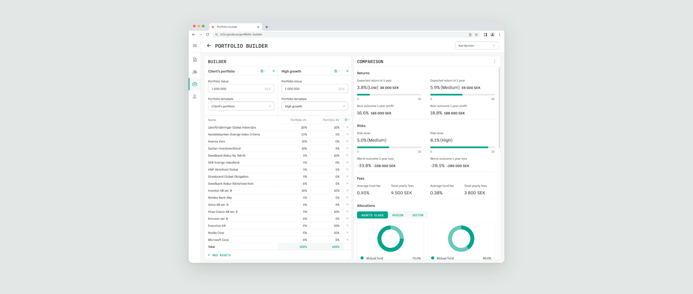

Case study, Njorda
Advisor portal and portfolio builder
Every client meeting comes down to one question: could my money be doing better? To answer it, an advisor needs the client’s full picture and a clear alternative. The Njorda portal gives them both: a client profile with every bank, account and holding in one view, and a builder that drafts a proposal next to it and shares the comparison as a report.
- Role
- Sole product designer: requirements, research, flows, UI, prototypes, design QA
- Team
- 2 co-founders (product, tech), 5 developers, 1 QA
- Platform
- Web, desktop first
- Timeline
- 2022 to 2026
The advisor’s path through the portal
The advisor works in the portal. The advisor’s client, an investor, only connects their banks and gets the report. Every client goes through the same five steps, and most of the work happens in the fourth, the builder.
- AdvisorNew client
A client profile, and a link sent to the client to connect their banks.
- Advisor’s clientHoldings collection
The client’s bank accounts, connected with BankID: on their own, or with the advisor in a meeting.
- AdvisorOverview and analysis
All the client’s holdings and assets in one place, with analysis of risk, fees and allocations.
- AdvisorPortfolio builder
The advisor proposes changes that improve the portfolio, next to a copy of the current one. The real portfolio is never touched.
- Advisor’s clientReport
A full picture of the client’s wealth, with the proposal next to it, to decide how to manage their assets.
2022 to 2025
From rough mockups to a product
The portal began as rough first mockups that set out the structure. I turned them into a product advisors work in every day.
Clients and client profile
I took both screens from the first mockups into the new brand. The client list got a new column: each client’s holdings reports, with their status. The client profile split into two tabs, Overview and Analysis. Overview groups everything into cards by section, so a client’s assets across banks read at a glance. Analysis got filters, and its figures fell into clear sections: performance, allocations, risk and return.
Holdings collection
The advisor sends the client a link, and the client connects their banks so the advisor can see what they own. I brought the flow into the new brand and cleaned it up. One problem stayed until 2026: once you’d moved on, you couldn’t go back and add another bank.

Portfolio builder
The brief listed what advisors must be able to do: build portfolios and templates, compare a client’s portfolio with a proposal, work with single products or whole asset classes, compare risk and fees. How was up to me.
- Excel or a builder? The product leads wanted the builder to feel like Excel: advisors were spreadsheet power users. So the first version had one table, each product a row with a cell per portfolio, and 0 where a portfolio didn’t hold it. As soon as the two portfolios differed, the table filled up with 0% rows. Later we split it into two tables, one per portfolio.
- Results while building. Advisors needed to see the numbers while they built. First, a section under the table showed expected return and risk, and the full report sat further down the page, so advisors kept scrolling down and back up. Then I drew a concept with the builder and the report side by side, but with both on one screen it felt overloaded. The idea waited until 2026, when a lighter analytics panel next to the builder made it work.


2026
Improving tools people rely on
By 2026 the portal was part of every advisor’s day, and so were its rough edges: a hidden menu here, an unclear save there, a flow you couldn’t step back into. The brief: a cleaner look and smoother flows, with nothing to relearn.
Below is the redesign as working prototypes, in the order an advisor goes through the portal: clients, holdings collection, the builder. Scrolling goes through each one state by state, and every screen can be clicked. The clients and all the figures are made up.
This is a real prototype.
Click anything inside the screen. Scrolling walks through every state; the arrows on the right jump between screens.
Where it ended up
- The portfolio builder, built from a blank page, became the most used part of the platform.
- The 2026 redesign worked through advisors’ complaints one by one, without changing how they work.
- The builder prototype is now what the next-generation builder is built from.
What I learned
Working on one product from the first mockups to its redesign showed me which decisions held up over four years. The 2026 work was mostly about restraint: keeping what people relied on and changing only what got in their way. And building prototypes with AI showed me how much a working flow says that a static mockup can’t.
Let’s talk
Open to product design roles, remote or in Poznań.